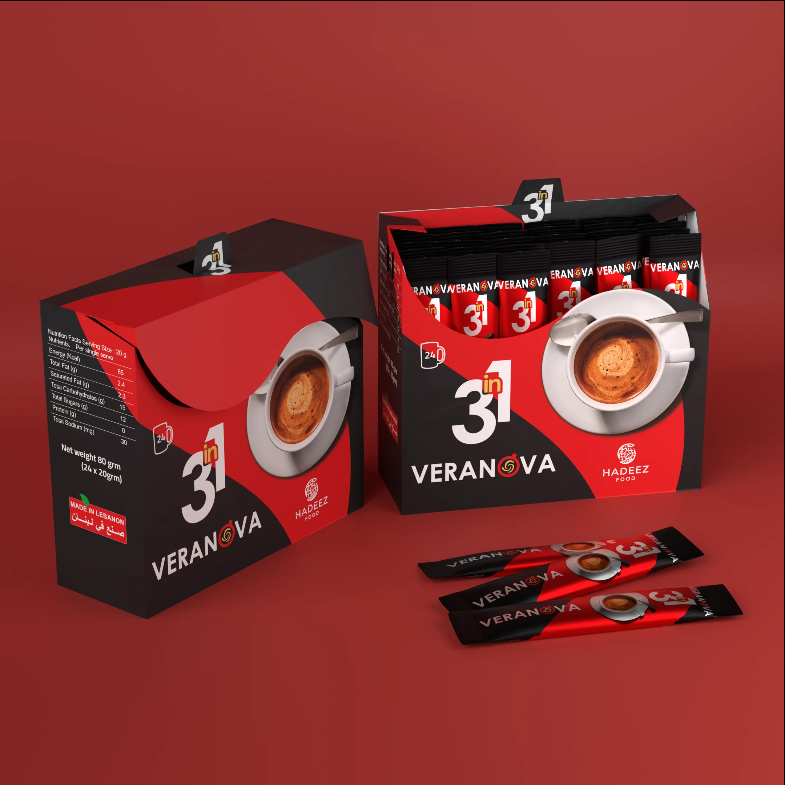

Brand + Packaging
Veranova
A bold instant-drink identity designed to scale across 2-in-1, 3-in-1, sachets and cartons.

Challenge
Build a product family with strong shelf recognition while keeping multiple variants easy to distinguish.
Approach
A compact spiral icon and high-contrast red, charcoal and white system create a fast, energetic visual signature across formats.
Logo explorationIdentity construction2-in-1 / 3-in-1 packagingSachetsCartons3D mockups